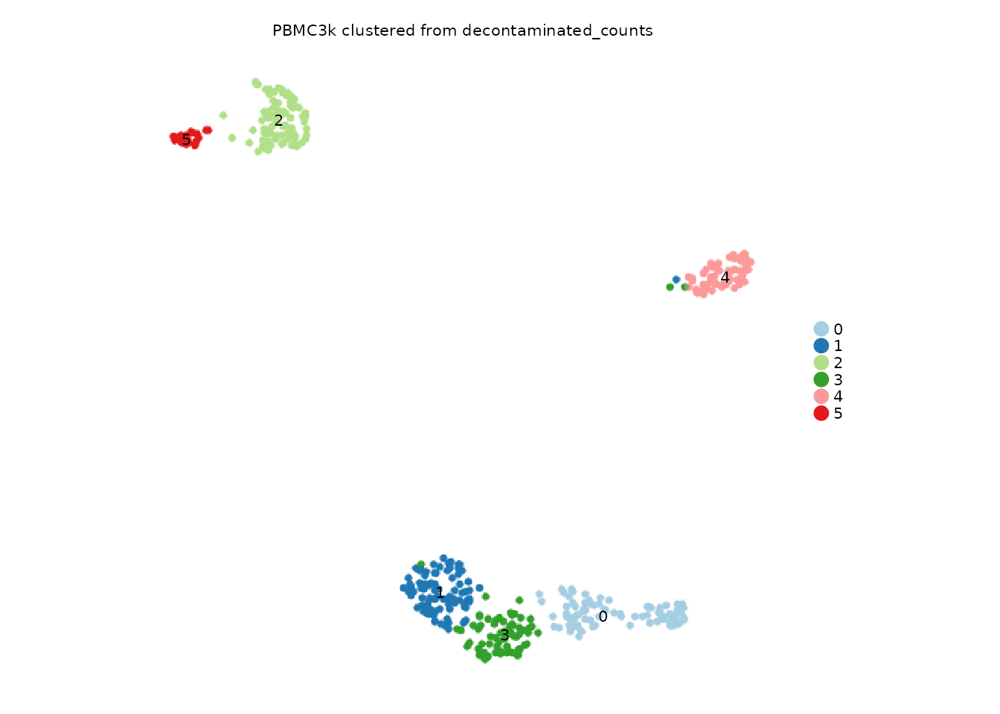

Layer-aware workflows
Songqi Duan
duan@songqi.org Source:vignettes/layered-workflows.Rmd
layered-workflows.RmdSeurat v5 objects can store multiple assay layers. Shennong exposes
assay and layer in the functions where the
count source matters, so workflows can use raw counts, decontaminated
counts, or other matrix layers without rewriting the analysis.
This article uses PBMC3k and creates a demonstration layer by copying counts. In real work, that layer might come from decontX, SoupX, CellBender, or another preprocessing tool.
Create a demonstration layer
library(Shennong)
library(Seurat)
library(dplyr)
pbmc <- sn_load_data("pbmc3k")
#> INFO [2026-05-05 20:34:11] Initializing Seurat object for project: pbmc3k.
#> INFO [2026-05-05 20:34:11] Running QC metrics for human.
#> INFO [2026-05-05 20:34:12] Seurat object initialization complete.
counts_full <- SeuratObject::LayerData(pbmc, assay = "RNA", layer = "counts")
demo_features <- names(sort(Matrix::rowSums(counts_full), decreasing = TRUE))[
seq_len(min(1000, nrow(counts_full)))
]
demo_cells <- colnames(pbmc)[seq_len(min(400, ncol(pbmc)))]
pbmc <- subset(pbmc, features = demo_features, cells = demo_cells)
counts <- SeuratObject::LayerData(pbmc, assay = "RNA", layer = "counts")
SeuratObject::LayerData(pbmc, assay = "RNA", layer = "decontaminated_counts") <- counts
SeuratObject::Layers(pbmc[["RNA"]])
#> [1] "counts" "decontaminated_counts"The object still has its original counts. The new layer is simply another input matrix that layer-aware Shennong functions can target.
Cluster from a selected layer
sn_run_cluster() temporarily uses the requested layer
for the workflow and restores the original count layer before returning
the object.
pbmc_layered <- sn_run_cluster(
object = pbmc,
normalization_method = "seurat",
assay = "RNA",
layer = "decontaminated_counts",
nfeatures = 500,
dims = 1:10,
resolution = 0.6,
species = "human",
verbose = FALSE
)
#> WARN [2026-05-05 20:34:13] Skipping cell cycle scoring because the selected assay has insufficient overlap with human cell-cycle markers (S: 0, G2M: 1).
sn_plot_dim(
pbmc_layered,
reduction = "umap",
group_by = "seurat_clusters",
label = TRUE,
title = "PBMC3k clustered from decontaminated_counts"
)
Run DE on the right layer
Marker and contrast analyses usually use normalized data; pseudobulk
analyses usually use counts. Shennong keeps that distinction explicit
through layer.
pbmc_layered <- sn_find_de(
object = pbmc_layered,
analysis = "markers",
group_by = "seurat_clusters",
assay = "RNA",
layer = "data",
store_name = "cluster_markers",
return_object = TRUE,
verbose = FALSE
)
sn_get_de_result(
pbmc_layered,
de_name = "cluster_markers",
top_n = 3,
with_metadata = TRUE
)
#> $schema_version
#> [1] "1.0.0"
#>
#> $package_version
#> [1] "0.1.4"
#>
#> $created_at
#> [1] "2026-05-05 20:34:21 UTC"
#>
#> $table
#> # A tibble: 1,004 × 7
#> p_val avg_log2FC pct.1 pct.2 p_val_adj cluster gene
#> <dbl> <dbl> <dbl> <dbl> <dbl> <fct> <chr>
#> 1 3.25e-64 5.86 0.872 0.038 3.25e-61 0 CST7
#> 2 8.30e-61 6.67 0.802 0.022 8.30e-58 0 GZMA
#> 3 1.49e-60 6.65 0.93 0.102 1.49e-57 0 NKG7
#> 4 2.17e-57 4.30 0.965 0.131 2.17e-54 0 CCL5
#> 5 4.56e-43 4.66 0.826 0.143 4.56e-40 0 CTSW
#> 6 2.57e-36 6.11 0.57 0.035 2.57e-33 0 PRF1
#> 7 5.96e-32 6.91 0.453 0.013 5.96e-29 0 GZMK
#> 8 4.57e-31 8.48 0.43 0.01 4.57e-28 0 FGFBP2
#> 9 3.88e-30 0.999 1 0.997 3.88e-27 0 B2M
#> 10 3.80e-28 7.81 0.384 0.006 3.80e-25 0 GZMH
#> # ℹ 994 more rows
#>
#> $analysis
#> [1] "markers"
#>
#> $method
#> [1] "wilcox"
#>
#> $group_by
#> [1] "seurat_clusters"
#>
#> $group_col
#> [1] "cluster"
#>
#> $ident_1
#> NULL
#>
#> $ident_2
#> NULL
#>
#> $subset_by
#> NULL
#>
#> $sample_col
#> NULL
#>
#> $assay
#> [1] "RNA"
#>
#> $layer
#> [1] "data"
#>
#> $rank_col
#> [1] "avg_log2FC"
#>
#> $p_col
#> [1] "p_val_adj"
#>
#> $p_val_cutoff
#> [1] 0.05
#>
#> $de_logfc
#> [1] 0.25
#>
#> $min_pct
#> [1] 0.25
#>
#> $logfc_threshold
#> [1] 0.1
#>
#> $n_genes
#> [1] 1004The stored metadata records the analysis context, which helps downstream plotting and interpretation recover how the result was made.
Use the same layer in other workflows
Layer selection appears in functions where using the wrong matrix would change the answer.
pbmc_layered <- sn_filter_genes(
pbmc_layered,
min_cells = 5,
assay = "RNA",
layer = "decontaminated_counts",
species = "human"
)
pbmc_layered <- sn_run_celltypist(
x = pbmc_layered,
assay = "RNA",
layer = "decontaminated_counts",
over_clustering = "seurat_clusters",
quiet = TRUE
)
rogue_tbl <- sn_calculate_rogue(
pbmc_layered,
cluster_by = "seurat_clusters",
assay = "RNA",
layer = "decontaminated_counts"
)Simulate from the current object
Simulation is useful when you need a controlled object with the same
covariate structure as a real experiment. sn_simulate()
keeps the API method-based, so new simulation engines can be added
later. With method = "scdesign3", it converts the selected
Seurat layer to a SingleCellExperiment, calls scDesign3, and returns a
simulated Seurat object by default. It does not merge original and
simulated cells unless combine_original = TRUE.
sim_pbmc <- sn_simulate(
object = pbmc_layered,
method = "scdesign3",
celltype = "seurat_clusters",
ncell = 100,
assay = "RNA",
layer = "decontaminated_counts",
n_cores = 1,
return = "seurat"
)
sim_pbmc
sim_pbmc@misc$scdesign3Cache layer-aware artifacts
Layer-aware results are still regular Seurat objects and tables, so the same IO helpers from the first article apply.
outdir <- sn_set_path(file.path(tempdir(), "shennong-pbmc3k-layered"))
object_path <- file.path(outdir, "pbmc3k_layered.qs2")
markers_path <- file.path(outdir, "pbmc3k_layered_markers.csv")
sn_write(pbmc_layered, object_path)
sn_write(
sn_get_de_result(pbmc_layered, "cluster_markers", top_n = 5),
markers_path
)
sn_check_file(c(object_path, markers_path))The main habit is to name the layer in every step where it matters. That makes the workflow readable months later and reduces the chance of silently switching between raw and corrected matrices.